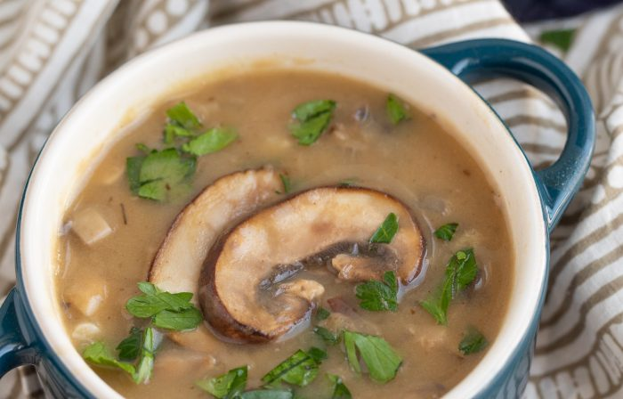

Mushroom soup

Easy Mushroom soup
This simple, delicious recipe is made without cream or milk.
A mix of butter and flour thicken chicken stock to create a velvety soup without being too heavy.
The combination of crimini and white button mushrooms add earthy notes that work well with the rich broth.
Required ingredients:
- 3 tablespoons unsalted butter
- 2 garlic cloves, minced
- 1 shallot, finely chopped
- 4 ounces white button mushrooms, chopped
- 2 tablespoons all-purpose flour
- 3 cups chicken stock
- ¼ teaspoon fine sea salt, or to taste
- ¼ teaspoon ground black pepper, or to taste
- Sliced sautéed mushrooms for garnish, optional
- Chopped parsley for garnish, optional
Instructions:
- Melt 2 tablespoons of the butter in a large pot such as a Dutch oven over
medium-high heat. Add the garlic and shallot, cook for 1 minute, until they
begin to soften. Add the mushrooms and cook for about 3 minutes, until
tender and browned. Transfer all the contents of the pot to a bowl.
-
Add the remaining 1 tablespoon of butter to the pot. Once melted, sprinkle
in the flour and whisk it quickly into a paste. Reduce the heat to medium.
Add the stock a little at a time, whisking out the clumps between each addition.
-
Increase the heat back to medium-high and allow the soup to simmer well
for 3 minutes. Add the mushrooms back to the pot and continue to cook
for 2 more minutes. The stock will thicken slightly to be somewhat creamy.
-
Let cook for 3 to 4 minutes, then ladle into bowls. Garnish with mushrooms
and parsley, if desired.